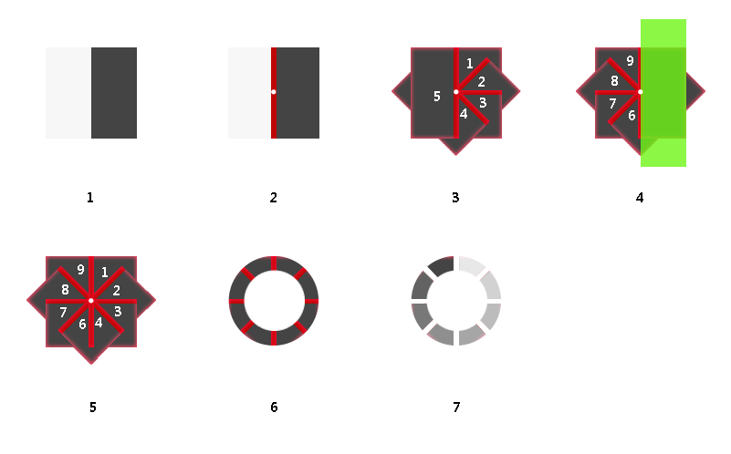

上次简单的介绍了下如何用代码实现菊花旋转的加载动画，动画点击，这次继续我们的动画系列，实现另外一种加载动画，圆环旋转。与上次不同的是，菊花旋转是通过改变元素透明度来实现动画，这次因为考虑到元素叠加，加上元素本身带有背景色，如果改变透明度会影响效果，所以直接改变元素的背景颜色，加上适当的延时，就可以实现这种圆环的效果。动画实现的根本原理就是将每个需要变化的元素以及变化的过程分离出来。
所有的动画在chrome中调试，未考虑到兼容性以及性能问题，只是单纯的介绍如何实现效果。如果有更好的方法会及时更新。

2.1 先定义元素容器，元素的两块内容宽度为50%，绝对定位，距离左侧50%，这样是方便内容绕着元素中心旋转。
2.2 每个子元素定义左边框，边框的颜色和外层容器的背景色相同，这样有镂空的感觉，注意的是子元素需左移边框一半的宽度，确保容器的中心为边框的中心，不然子元素旋转的时候会有误差。
2.3 定义每个子元素旋转的度数，打造出扇形的形状，最后拼成右边圆的形状。
2.4 将右边圆的所有子元素复制，旋转180度，拼出左边圆的形状，此时左边圆的子元素会覆盖右边的形状，所以要使用clip进行裁切，只显示左边圆的部分。这时构成一个完整的圆的所有元素就齐了，显示如2.5.
2.6 此时元素的形状还不是标准的圆，在元素上覆盖与背景同色的圆，然后外层容器使用border-radius形成一个正圆，这时整个元素显示为环形形状。
2.7 定义动画的关键帧，并用在每个子元素上。这个动画就是改变每个子元素的背景色，顺时针延迟动画的开始时间，最终就形成了gif图中的显示方式。
这个动画其实并不复杂，也没用到多深奥的技术，主要还是使用了transform和animation属性。
另外还用到clip属性，控制元素的显示范围，裁剪绝对定位元素。这个属性定义一个裁剪矩形，在这个矩形范围内的元素才可见。
3.1 rotate
rotate是transform方法中的一个属性，除了rotate之外，还有translate(平移)，scale(缩放)，skew(拉伸)。具体的就不详细解释了。
3.2 animation
animation方法的使用步骤是先使用@关键字定义动画的关键帧，然后在对应的样式名称里来引用。
案例中先定义动画load
@-webkit-keyframes load{0%{opacity:0;}100%{opacity:1;}}
然后在使用动画的节点样式里来引用
.m-load2 .line div:nth-child(1):before{-webkit-animation:load 1.2s linear 0s infinite;}
其中load 1.2s linear 0s infinite这几个值分别对应动画的名称，动画持续的时间，动画显示的方式，动画的延迟时间，动画是否循环播放。
另外还有动画播放的次数，动画是否反向播放等。
3.2 clip属性
clip属性控制元素的显示范围，裁剪绝对定位元素。这个属性定义一个裁剪矩形，在这个矩形范围内的元素才可见。
使用方法：clip:rect(0px,16px,32px,1px);
四个有效值为：rect (top, right, bottom, left)